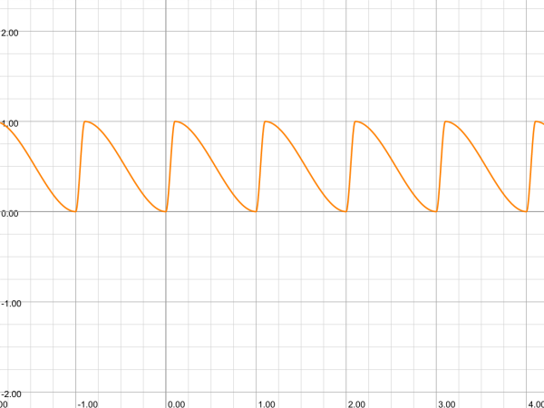
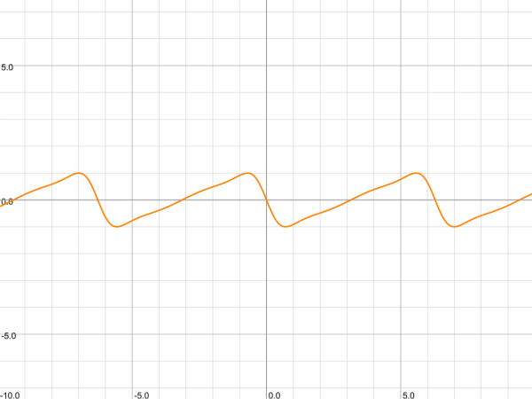
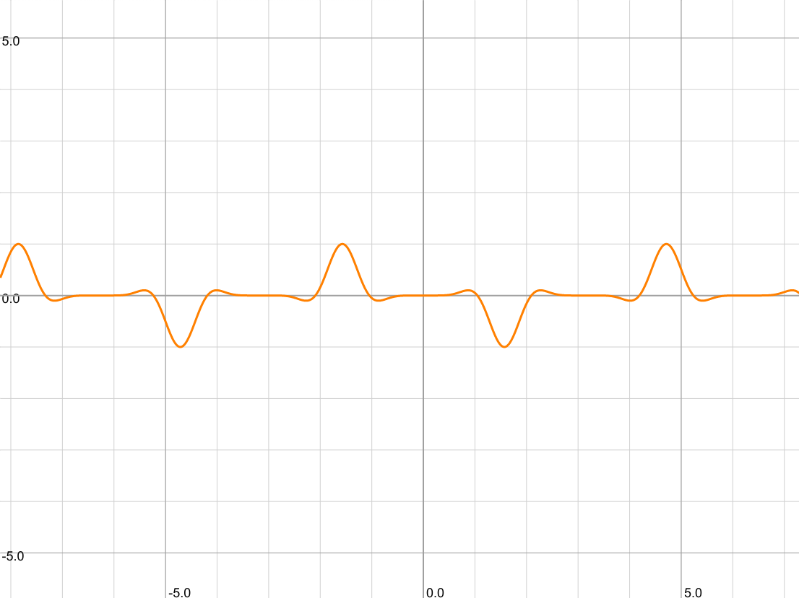

Shadertoy 作品学习：Heartfelt by BigWIngs
本文学习 Shadertoy 上一个人气很高的作品 Heartfelt:
这个作品在 Shadertoy 的 likes 排行榜上属于 top20 的存在，复杂程度适中，作者还贴心的在 YouTube 上给出了视频讲解 (YouTube 地址)，这里根据我的理解再做一个逐行的详细分析。
Shadertoy 上的许多精彩程序有个共同的特点，就是它们的代码包含的信息量非常大，某段不起眼的代码往往都有特定的意图，并且对渲染结果有决定性的影响。学习的人不经过手动复现，反复比较后是很难理解的。
Shader 编程主要基于距离场 (signed distance field) 的技术，这个过程非常类似从一块石料出发雕刻艺术品：
- 给定一个 uv 空间，这就好比一块毛坯石料。
- 通过距离场函数来搭建场景，这就好比在石料上用画笔描出轮廓，然后切割，形成作品大致的形状。
- 使用
smoothstep,clamp之类的函数，突出想要的细节。这就好比对石料精细打磨，让沟壑、曲线凸显出来。 - 对场景上色。
本文针对初步接触 shader 的读者，会花很多篇幅在讲解基础的技巧上。文中的代码都是可以在左侧的窗口中实时看到效果的。
第一步：画网格
在 Heartfelt 这个作品中，雨滴分为两种：
- 第一种是静态雨滴，它们由于质量比较小，重力不足以克服与屏幕的摩擦力，所以落在屏幕上以后并不会移动，而是原地缓慢蒸发掉。
- 第二种是动态雨滴，它们质量比较大，会在屏幕上滑落，并在轨迹上延伸出一条水迹。
这两种雨滴是分别绘制的，不管哪一种都需要将屏幕切分为网格，所以要理解 Heartfelt 这个作品，首先要掌握怎样画正方形网格。这也是 shader 中最基本的操作，来看一下：
第 2，3 行：这两行是将窗口的像素坐标
fragCoord映射为平面上的直角坐标 uv，uv 的变化范围是 \([0, 8w/h] \times [0,8]\)，其中 \(w,h\) 分别是窗口的宽度和高度。第 3 行：这一步是关键，
fract这个函数的作用是返回输入值的小数部分，这是个周期为 1 的函数，uv = fract(uv)会把整个 uv 区域分成若干个单位方格，每个单位方格本身是一个坐标范围是 \([0,1]\times[0,1]\) 的局部坐标空间。返回的新的 uv 值是当前位置在方格中的坐标。所以本质上fract是一种特殊的坐标变换，它在生成周期性的结构时非常有用。减去 0.5 是再作了一次平移，使得原点位于方格的中心。fract函数经常和floor函数一起调用：floor(uv)会返回 uv 所在方格左下角的整点坐标，这可以告诉 uv 位于哪个方格中；fract(uv) - 0.5会告诉我们 uv 在这个方格中相对于方格中心的位置。第 4, 5 行：现在 uv 属于某个方格中，取值范围是 \([-0.5,0.5]\times[-0.5, 0.5]\)，
d是 uv 分别到垂直、水平两种网格线距离绝对值的最小者，d越小当前位置就越接近网格线，uv 落在网格线上当且仅当d = 0。第 7 行：为了绘制具有一定宽度的网格线，我们使用了
d = smoothstep(0.05, 0.0, d)这个处理。smoothstep(b, a, x)在 b > a 时是一个从 a 到 b 平滑地从 1 降低为 0 的函数，所以d = smoothstep(0.05, 0.0, d)会让 d 从网格线开始 (d = 0.0 的位置)，到距离网格线 0.05 的地方为止，平滑地由 1 降低到 0。第 8, 9 行：我们用 d 的值作为最终颜色的 r 分量在屏幕上显示出来，可以看到距离网格线 在 0.05 以内的点都是红色，超出这个距离的点都是黑色。即网格线的宽度是 0.1。
我们把绘制网格的代码提取出来放在一个函数里面，后面可以直接使用它：
1 | |
第二步：画静态雨滴
这一步来给每个方格中加上一个静态的雨滴。首先我们在每个方格中心画一个圆形的雨滴，为此用
d = length(uv) 计算当前 uv 到方格中心 (0, 0) 的距离：
这里我们使用 smoothstep 函数对 d
做了一个后期雕琢，让它在距离原点为 0.1 以内的部分是 1，0.1
之外的部分快速衰减到 0。这样可以起到平滑的效果。把 d
作为颜色显示出来，就会看到每个方格中心出现了一个半径是 0.1
的白色圆点，它们是 d = 1 的部分，黑色对应的是 d = 0 的部分。
我们希望静态的雨滴具有如下特点：
- 它们的位置应该随机地出现在方格中，而不总是出现在中心。
- 每个雨滴应该有快速出现，然后缓慢地蒸发消失的过程。
- 雨滴之间出现和消失的时间应该是随机的，不能所有雨滴一起冒出来然后一起消失。
- 我们应该可以调整雨滴的质量，让有的雨滴看起来比较厚重，有的比较轻薄。
为此我们需要写一个噪声函数
vec3 noise(vec2 id)，让它根据每个方格的 id 值返回一个
vec3，这个 vec3 的 xy
分量用来控制雨滴的位置，z 分量用来控制雨滴的时间。
方格的 id 值可以选择为方格左下角的整点坐标。
1 | |
这个 noise 函数会对一个 vec2
类型的输入返回一个 vec3
类型的值。它并不是随机的，固定的输入总是返回相同的结果，不过它使用了一些眼花缭乱的参数和操作使得输出的值杂乱无章，这样可以制造出随机的效果。
第 4 行我们在对 uv 取 fract 操作之前通过
floor 获得了 uv 所在方格的左下角的整点坐标
id，然后用 noise 函数来获得一个与
id 相关的 vec3 n，然后用 n.xy
来得到一个雨滴的位置 pos。pos 的取值范围是
\([-0.35, 0.35]\times[-0.35,
0.35]\)。
为了营造出雨滴缓慢蒸发的效果，我们需要引入时间参数 t，让雨滴周期性地重复出现、消失这个过程。我们只需要给雨滴的密度 d 乘以一个周期性地、快速地从 0 变化到 1，然后缓慢地从 1 变化到 0 的函数 \(f(t)\)。我们首先在 \([0,1]\) 区间上构造一个快速上升到 1 然后缓慢下降到 0 的函数：
1 | |
这个函数是一个周期为 1 的尖峰函数，它的尖点在 t = b 处，其中 0 < b < 1 是一个可调的参数。如果我们取 b 使得它比较接近 0 的话，那么它会从 0 开始快速上升到 b，然后从 b 缓慢下降到 1。然后重复此过程。它大致长这样：(graphtoy 在线版)

我们看看把时间参数 t 代入这个函数然后乘到 d 上的效果：
这里重要的地方在第 10 行时间参数 t 的定义。我们通过给全局时间
iTime (单位是秒) 乘以一个常数 0.05 来控制时间的尺度
(相当于以实际时间的 20s 为动画中的 1 个单位时间)，然后用
fract(iTime * 0.05 + n.z)
来制造周期性的时间值，为什么还要加上 n.z
呢？这是为了打乱方格之间的时间同步，即将每个方格的时间各自拨快一个随机值
n.z，这样可以避免所有雨滴使用同一个全局的时间，从而导致雨滴同步地出现/消失。
在第 12 行，我们通过给 fade 再乘以一个随机值
fract(n.z * 10.0) (其它值比如
abs(sin(n.z * 6.28)) 也是可以的)
来修改雨滴密度值，使得之前密度恒为 1 的雨滴的密度可以取值小于
1，从而营造出雨滴轻重不一的效果。
我们把上面画静态雨滴的代码提取出来作为一个函数：
1 | |
第三步：画动态雨滴
在我最初看到这个 Heartfelt 这个作品的时候，我是很惊讶作者是如何做到让水滴弯弯扭扭地流下来的，而且还能留下对应的轨迹。这得很复杂吧？其实并没有，不过要处理的细节确实比静态水滴要多一些。我们来分步讲解：
首先我们还是要划分网格，每个格子里面只有一个下落的雨滴 (想不到吧？)。为了让这个格子能容下雨滴的移动，它不应该是一个方格，而是一个狭长的带状区域：
这里我们给 uv 额外乘了一个
aspect，这是一个改变横纵比的变换，横坐标的范围是
0~8，水平方向上会出现 8 个矩形；但是垂直方向上范围是 0~4，只有 4
个矩形。所以网格在水平方向上变细了。但是这些网格排列的太整齐了，垂直下落的雨滴不应该是
8 个一排这样下落，我们需要打乱这些矩形的高度：
发生了什么？奥秘在 8, 9 两行：我们首先用
floor(uv * grid) 获取矩形的 id，然后根据
id.x，也就是矩形所在的列的编号，生成一个噪声值
hash11(id.x)，这里 hash11
可以是任何一个看起来没有什么规律的函数。用这个噪声值将 uv
所在的列做一个整体的向下平移。具有相同 id.x
的那些矩形，也即网格的每一列，会各自向下移动。然后利用这个新的 uv
重新计算网格，得到的就是列之间错开的网格了。
思考：12 行处我们为什么要重新计算新的
id，使用旧的有什么问题吗？记住这个问题，答案在后面。
接下来我们给每个矩形中加入雨滴。我们还是先从静态的雨滴开始，然后再让它动起来：
这里绘制雨滴的代码和之前一样：取 (x, y) 为雨滴的位置 (目前 x = y =
0.0) 并计算 uv 到它的距离。dropPos 表示当前 uv
到雨滴的相对位置。注意除以 aspect 这个操作：虽然 uv 的 xy 坐标的范围都是
-0.5~0.5，但是它的横纵比是不对的，这个坐标下的单位正方形是图中压扁了的矩形，圆形其实也是个压扁了的椭圆。要绘制一个正常的圆我们需要把横纵比纠正回去。所以
length(dropPos)
就是当前位置到雨滴的横纵比正确的距离，我们用 smoothstep
将距离小于 0.07 的部分保留，得到的就是半径 0.07 的圆形雨滴。
为了让雨滴动起来，我们分别考虑雨滴在垂直和水平方向的移动。作者希望让雨滴快速下落，停住，再下落，为此他设计了一个巧妙的关于时间 t 的函数来控制水滴的纵向移动：
1 | |
这里乘以 0.45 是因为 sin 的范围是 \([-1.0, 1.0]\)，而 uv 的范围只有 \([-0.5, 0.5]\)。
这个函数的图像如下：(去掉 0.45 的因子)

由图像可见确实 \(y\) 爬升的很慢，但是下降的很快。把这个函数代入 shader 里：
你可能要问了，诶，雨滴不是应该一直下降么？这样爬升是不对的呀？这就是个
trick 的地方了：雨滴在矩形内部是相对于矩形作上下往复运动的
(相对运动)，但是作者让整个网格匀速向下运动
(绝对运动)，两个速度叠加，雨滴的绝对速度 = 网格的绝对速度 +
雨滴相对网格的速度，只要网格下落的足够快就可以抵消掉雨滴向上运动的速度，所以我们只要加上一行
uv.y += iTime * 0.25 就足够了：(uv 上移 = 画在 uv
空间中的对象下移)
可以看到动画中雨滴在矩形内仍然是上下往复运动的，但是相对于屏幕是一直下落的。
接下来我们来给雨滴的尾迹加上小水珠。这些小水珠应该是相对于整个屏幕是不动的，而不是随着雨滴下落，所以如果使用
uv 来计算水珠的话，必须抵消掉之前 uv 关于 iTime
的平移量：
这里绘制水珠的代码由 19-23 行给出。可见水珠是停在屏幕上不动的，只有网格在动。
19 行这里作者把原点的位置设在 (x, iTime*0.25)
处，这个位置相对于当前矩形区域是随着时间上移的，但是我们知道矩形区域相对于屏幕是随着时间下移的，下移的距离也是
iTime*0.25，所以二者抵消，水珠挂在屏幕上不动。
但是我们不希望雨滴的下方出现水珠，这不合理，所以需要给
trail 乘以一个在雨滴下方是 0，在雨滴上方是 1
的函数。这好办：雨滴中心的位置是
dropPos.y = 0，这正是水珠的分界线，所以
smoothstep(-0.05, 0.05, dropPos.y) 就是这样的函数。
此外我们希望模拟雨滴在下落过程中，尾迹中的水珠逐渐由小变大的过程，所以需要给
trail 再乘以一个最高处是 0 (uv.y = 0.5)，到雨滴处是 1 (uv.y
= y)，且逐渐增大的函数。而 smoothstep(0.5, y, uv.y)
正是这样的函数。把它们加入上面的代码，我们得到如下效果：
注意 17, 18 两行，你可以把它们分别注释掉看看效果的变化。
接下来我们要进一步改进雨滴的效果，有这么几件事情要做：
- 改变雨滴的位置，让它们各自出现在矩形中随机的位置。(噪声！)
- 打乱雨滴之间的时间同步。(噪声 again)
- 修改雨滴的形状，不要总是呈现圆形。(把 uv 胡乱搅合一下)
- 让雨滴在水平方向上也扭起来，不要总是垂直下落。(和竖直方向类似，搞个横向抖起来的函数就行)
我们分别来解释：
下图显示了一个扭曲的圆形：
这里的关键在第 4 行，如果没有这一行的话代码画的是一个圆心在 (0.3, 0) 处的圆，加上这一行以后变成了一个下粗上细的水滴形状。我们可以把这个形状的方程写出来：设 cen = (a, b)，uv = (x, y)，则 d 对应的数学表达式是 \[\sqrt{(x-a)^2 + (y - b + (x - a)^2)^2}.\] 根号里面是一个四次多项式，它是即雨滴的形状。
为了让雨滴横向扭起来，作者设计了另一个 wiggle 函数如下：
1 | |
这仍然是一个周期函数，振幅是 1，它长这样：

我们来看看效果：